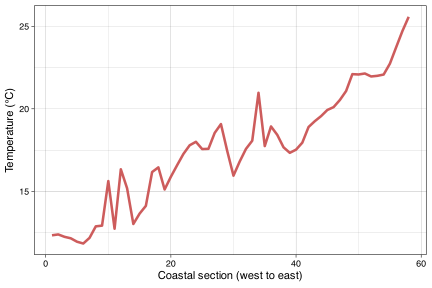
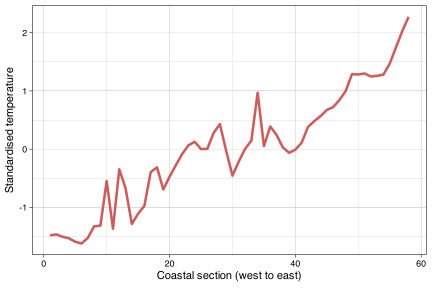
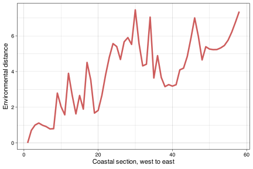
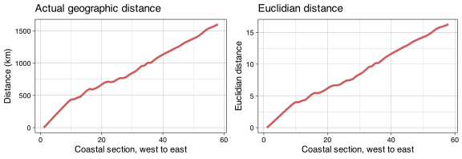

2b. Environmental Distance
Continuing to look at environmental data
![]()
“It’s not that I’m so smart, it’s just that I stay with problems longer.”
— Albert Einstein
This material must be reviewed by BCB743 students in Week 1 of Quantitative Ecology.
Example xyz data –
Euclidian_distance_demo_data_xyz.csvExample env data –
Euclidian_distance_demo_data_env.csvThe seaweed environmental data (Smit et al. 2017) –
SeaweedEnv.RDataThe seaweed coastal sections (sites) –
SeaweedSites.csvThe Doubs River environmental data –
DoubsEnv.csv
1 Set up the analysis environment
2 Revisiting Euclidian distance
The toy data have arbitrary columns to demonstrate the Euclidian distance calculation:
\[ d(a,b) = \sqrt{(a_x - b_x)^2 + (a_y - b_y)^2 + (a_z - b_z)^2} \]
The distance is found between every pair of sites named a to g whose locations are marked by the ‘coordinates’ \(x\), \(y\), and \(z\)—i.e. this is an example of 3-dimensional data (a space or volume, as opposed to 2D data situated on a \(x\), \(y\) place). We might also call each coordinate a ‘variable’ (sometimes called a ‘dimension’) and hence we have multivariate or multidimensional data.
Let’s load the dataset and find the size of the dataframe:
There are seven rows and four columns.
The data look like:
xyz site x y z
1 a 4 1 3
2 b 5 5 5
3 c 6 6 4
4 d 1 4 9
5 e 2 3 8
6 f 8 3 1
7 g 9 1 5The first column contains the site names and it must be excluded from subsequent calculations. The remaining three columns will be used below.
Calculate the Euclidian distance using vegan’s vegdist() function and view the lower triangle with the diagonal:
xyz_euc <- round(vegdist(xyz[, 2:4], method = "euclidian",
upper = FALSE, diag = TRUE), 4)
# selected only cols 2, 3 and 4
xyz_euc 1 2 3 4 5 6 7
1 0.0000
2 4.5826 0.0000
3 5.4772 1.7321 0.0000
4 7.3485 5.7446 7.3485 0.0000
5 5.7446 4.6904 6.4031 1.7321 0.0000
6 4.8990 5.3852 4.6904 10.6771 9.2195 0.0000
7 5.3852 5.6569 5.9161 9.4340 7.8740 4.5826 0.0000Convert to a dataframe and view it:
xyz_df <- as.data.frame(as.matrix(xyz_euc))
xyz_df 1 2 3 4 5 6 7
1 0.0000 4.5826 5.4772 7.3485 5.7446 4.8990 5.3852
2 4.5826 0.0000 1.7321 5.7446 4.6904 5.3852 5.6569
3 5.4772 1.7321 0.0000 7.3485 6.4031 4.6904 5.9161
4 7.3485 5.7446 7.3485 0.0000 1.7321 10.6771 9.4340
5 5.7446 4.6904 6.4031 1.7321 0.0000 9.2195 7.8740
6 4.8990 5.3852 4.6904 10.6771 9.2195 0.0000 4.5826
7 5.3852 5.6569 5.9161 9.4340 7.8740 4.5826 0.0000Distance matrices have the same properties as dissimilarity matrices, i.e.:
The distance matrix is square (number rows = number columns).
The diagonal is filled with 0.
The matrix is symmetrical—it is comprised of symmetrical upper and lower triangles.
In terms of the meaning of the cell values, their interpretation is also analogous with that of the species dissimilarities. A value of 0 means the properties of the sites (or sections, plots, transects, quadrats, etc.) in terms of their environmental conditions are identical (this is always the case the the diagonal). The larger the number (which may be >1) the more different sites are in terms of their environmental conditions.
Since each column, \(x\), \(y\), and \(z\), is a variable, we can substitute them for actual variables or properties of the environment within which species are present. Let’s load such data (again fictitious):
env_fict <- read.csv("../data/Euclidian_distance_demo_data_env.csv")
head(env_fict, 2) # print first two rows only site temperature depth light
1 a 4 1 3
2 b 5 5 5These are the same data as in Euclidian_distance_demo_data_xyz.csv but I simply renamed the columns to names of the variables temperature, depth, and light intensity. I won’t repeat the analysis here as the output remains the same.
Now apply vegdist() as before. The resultant distances are called ‘environmental distances’.
Let us now use some real data.
3 A look at the seaweed environmental data
These data accompany the analysis of the South African seaweed flora (Smit et al. 2017).
We see that the data have 58 rows and 18 columns… the same number of rows as the seaweed.csv data. What is in the first five rows?
round(env[1:5, 1:5], 4) febMean febMax febMed febX95 febRange
1 13.0012 18.7204 12.6600 16.8097 6.0703
2 13.3795 18.6190 13.1839 17.0724 5.8893
3 13.3616 17.8646 13.2319 16.6111 5.4314
4 13.2897 17.1207 13.1028 16.1214 5.0490
5 12.8113 16.3783 12.4003 15.5324 4.9779And the last five rows?
annRange febSD augSD annChl augChl febChl
53 4.3707 1.0423 0.7735 4.3420 4.3923 4.6902
54 4.3358 1.1556 0.9104 1.6469 2.2654 1.6930
55 4.4104 1.1988 0.8427 0.2325 0.6001 0.5422
56 4.6089 1.1909 0.6631 0.1321 0.4766 0.3464
57 4.9693 1.1429 0.4994 0.1339 0.5845 0.3185
58 5.5743 1.0000 0.3494 0.1486 0.7363 0.4165So, each of the rows corresponds to a site (i.e. each of the coastal sections), and the columns each contains an environmental variable. The names of the environmental variables are:
colnames(env) [1] "febMean" "febMax" "febMed" "febX95" "febRange" "augMean"
[7] "augMin" "augMed" "augX5" "augRange" "annMean" "annSD"
[13] "annRange" "febSD" "augSD" "annChl" "augChl" "febChl" As we have seen, there are 18 variables (or dimensions). These data are truly multidimensional in a way that far exceeds our brains’ limited ability to spatially visualise. For mathematicians these data define an 18-dimensional space, but all we can do is visualise 3-dimensions.
We select only some of the thermal variables; the rest are collinear with some of the ones I import:
env1 <- dplyr::select(env, febMean, febRange, febSD, augMean,
augRange, augSD, annMean, annRange, annSD)Let us make a quick graph of annMean as a function of distance along the coast (Figure 1).
ggplot(env1, aes(x = 1:58, y = annMean)) +
geom_line(colour = "indianred", size = 1.2) +
labs(x = "Coastal section (west to east)",
y = "Temperature (°C)") +
theme_linedraw()
4 z-scores
Here we need to do something new that was not necessary with the toy data. We calculate z-scores, and the process is called ‘standardisation’. Standardisation is necessary when the variables are measured in different units—e.g. the unit for temperature is °C whereas Ch-a is measured in mg Chl-a/m3.
febMean febRange febSD augMean augRange
1 -1.4915 -0.0443 -0.2713 -1.3765 -0.4735
2 -1.4014 -0.1432 -0.1084 -1.4339 -0.0700
3 -1.4057 -0.3932 -0.1720 -1.5269 0.0248
4 -1.4228 -0.6020 -0.3121 -1.5797 -0.0508
5 -1.5368 -0.6408 -0.4096 -1.5464 -0.0983For comparison with the previous plot showing the raw data, let us now plot the standardised annMean data (Figure 2).
ggplot(E1, aes(x = 1:58, y = annMean)) +
geom_line(colour = "indianred", size = 1.2) +
labs(x = "Coastal section (west to east)",
y = "Standardised temperature")+
theme_linedraw()
5 Euclidian distance
E1_euc <- round(vegdist(E1, method = "euclidian", upper = TRUE), 4)
E1_df <- as.data.frame(as.matrix(E1_euc))
E1_df[1:10, 1:10] 1 2 3 4 5 6 7 8 9 10
1 0.0000 0.7040 1.0006 1.1132 0.9902 0.9124 0.7849 0.7957 2.7901 2.0327
2 0.7040 0.0000 0.3769 0.6126 0.6553 0.7726 0.6291 0.5565 2.2733 1.7509
3 1.0006 0.3769 0.0000 0.2818 0.4729 0.7594 0.7164 0.7939 2.2692 1.8055
4 1.1132 0.6126 0.2818 0.0000 0.3662 0.7566 0.7911 0.9708 2.4523 1.9019
5 0.9902 0.6553 0.4729 0.3662 0.0000 0.4094 0.5261 0.9860 2.4847 2.1376
6 0.9124 0.7726 0.7594 0.7566 0.4094 0.0000 0.2862 1.0129 2.4449 2.3483
7 0.7849 0.6291 0.7164 0.7911 0.5261 0.2862 0.0000 0.7678 2.3035 2.1656
8 0.7957 0.5565 0.7939 0.9708 0.9860 1.0129 0.7678 0.0000 2.2251 1.5609
9 2.7901 2.2733 2.2692 2.4523 2.4847 2.4449 2.3035 2.2251 0.0000 2.8476
10 2.0327 1.7509 1.8055 1.9019 2.1376 2.3483 2.1656 1.5609 2.8476 0.0000We already know how to read this matrix. Let’s plot it as a function of the coastal section’s number (Figure 3).
ggplot(data = E1_df, (aes(x = 1:58, y = `1`))) +
geom_line(colour = "indianred", size = 1.2) +
xlab("Coastal section, west to east") +
ylab("Environmental distance")+
theme_linedraw()
(To be reviewed by BCB743 student but not for marks)
Use the Doubs River environmental data for this exercise.
Standardise these data using R and display a portion of the resultant standardised data file.
Discuss why standardisation was necessary for these data. Use the content of the actual ‘raw’ data file in your discussion.
Using R, calculate the Euclidian distances for these data and display a portion of the resultant distance matrix.
Discuss the ecological conclusions you are able to draw from these Euclidian distances. Provide a few graphs to substantiate your answer.
We will explore distance and dissimilarity matrices in more detail in later sections.
6 Pairwise correlations
It is easy to calculate pairwise correlation matrices for the above data:
febMean febRange febSD augMean augRange augSD annMean annRange annSD
febMean 1.00 -0.27 -0.28 0.90 -0.10 -0.16 0.98 0.74 0.41
febRange -0.27 1.00 0.79 -0.32 0.14 0.14 -0.29 -0.08 0.48
febSD -0.28 0.79 1.00 -0.16 0.35 0.46 -0.26 -0.33 0.31
augMean 0.90 -0.32 -0.16 1.00 -0.01 -0.05 0.96 0.37 0.13
augRange -0.10 0.14 0.35 -0.01 1.00 0.91 -0.10 -0.20 0.06
augSD -0.16 0.14 0.46 -0.05 0.91 1.00 -0.17 -0.27 0.08
annMean 0.98 -0.29 -0.26 0.96 -0.10 -0.17 1.00 0.60 0.29
annRange 0.74 -0.08 -0.33 0.37 -0.20 -0.27 0.60 1.00 0.68
annSD 0.41 0.48 0.31 0.13 0.06 0.08 0.29 0.68 1.00(To be reviewed by BCB743 student but not for marks)
Explain in s short (1/3 page paragraph) what is meant by ‘environmental distance’.
Describe to your grandmother how to interpret the above correlation matrix, and also mention what the major conclusions are that can be drawn from studying the matrix. Add a mechanistic explanation to demonstrate to her what your thought processes are for reaching your conclusion.
Explain why the same general trend is seen in the raw or standardised environmental data for
annMean(Figure 1 and 2) and that of environmental distance (Figure 3).
7 Euclidian distance of geographical data
When we calculate Euclidian distances between geographic lat/lon coordinate, the relationship between sections will be the same (but scaled) as actual geographic distances.
head(geo) Latitude Longitude
1 -28.98450 16.72429
2 -29.38053 16.94238
3 -29.83253 17.08194
4 -30.26426 17.25928
5 -30.67874 17.47638
6 -31.08580 17.72167Calculate geographic distances (in meters) between coordinate pairs (Figure 4).
dists <- geodist(geo, paired = TRUE, measure = "geodesic")
dists_df <- as.data.frame(as.matrix(dists))
colnames(dists_df) <- seq(1:58)
dists_df[1:5, 1:5] 1 2 3 4 5
1 0.00 48752.45 100201.82 151021.75 201380.00
2 48752.45 0.00 51894.01 102638.03 152849.90
3 100201.82 51894.01 0.00 50822.71 101197.22
4 151021.75 102638.03 50822.71 0.00 50457.53
5 201380.00 152849.90 101197.22 50457.53 0.00dists_euc <- vegdist(geo, method = "euclidian")
dists_euc_df <- round(as.data.frame(as.matrix(dists_euc)), 4)
dists_euc_df[1:5, 1:5] 1 2 3 4 5
1 0.0000 0.4521 0.9204 1.3871 1.8537
2 0.4521 0.0000 0.4731 0.9388 1.4037
3 0.9204 0.4731 0.0000 0.4667 0.9336
4 1.3871 0.9388 0.4667 0.0000 0.4679
5 1.8537 1.4037 0.9336 0.4679 0.0000plt2 <- ggplot(data = dists_euc_df, (aes(x = 1:58, y = `1`))) +
geom_line(colour = "indianred", size = 1.2) +
xlab("Coastal section, west to east") +
ylab("Euclidian distance") +
ggtitle("Euclidian distance")+
theme_linedraw()
ggarrange(plt1, plt2, ncol = 2)
(To be reviewed by BCB743 student but not for marks)
- Do a full analysis of the Doubs River environmental data using Euclidian distances and correlations. Demonstrate graphically any clear spatial patterns that you might find, and offer a full suite of mechanistic explanations for the patterns you see. It is sufficient to submit a fully annotated R script (not a MS Word or Excel file).
The Lab 2 assignment on Ecological Data was discussed on Monday 8 August and is due at 07:00 on Monday 15 August 2022.|
Provide a neat and thoroughly annotated R file which can recreate all the graphs and all calculations. Written answers must be typed in the same file as comments.
Please label the R file as follows:
BDC334_<first_name>_<last_name>_Lab_2.R
(the < and > must be omitted as they are used in the example as field indicators only).
Submit your appropriately named R documents on iKamva when ready.
Failing to follow these instructions carefully, precisely, and thoroughly will cause you to lose marks, which could cause a significant drop in your score as formatting counts for 15% of the final mark (out of 100%).
8 References
Reuse
Citation
@online{smit2021,
author = {Smit, AJ},
title = {2b. {Environmental} {Distance}},
date = {2021-01-01},
url = {https://tangledbank.netlify.app/BDC334/02b-env_dist.html},
langid = {en}
}